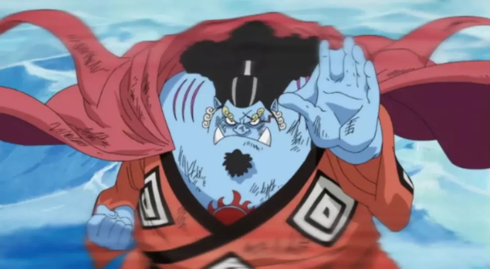

Monkey D. Luffy
Luffy é o capitão do bando dos chapéus de palha, quando era criança comeu um fruto proibido chamado de Gomu Gomu no Mi que lhe deu poderes de se esticar como se fosse um homem-borracha, Ele tem o sonho de um dia se tornar o rei dos piratas tem como inspiração o pirata que foi por todos considerado o rei, Gol D. Roger, ele conquistou fama, poder, riquezas e liberdade e para superá-lo Luffy terá que encontrar o One Piece, o tesouro lendário que está localizado na última ilha da Grand Line, para que possa encontrar o tesouro deixado por Roger, Luffy montou sua tripulação e juntos estão enfrentando os obstáculos do caminho para enfim encontrar o One Piece.Gomu Gomu no Mi

Roronoa Zoro
No início da história Zoro era um famoso caçador de piratas que havia sido capturado pela marinha. Ele foi o primeiro membro do bando dos chapéus de palha, tem o sonho de se tornar o maior espadachim do mundo e para que isso aconteça ele terá que derrotar Dracule Mihawk que por sua vez ja o derrotou uma vez, esta derrota fez Zoro jurar para Luffy que ficaria mais forte e que nunca mais seria derrotado, desde então ele vem treinando e se fortalencedo cada vez mais para derrotar seu maior rival, pois esta foi a promessa feita quando criança com sua melhor amiga.Santoryu - Estilo três espadas

Vinsmoke Sanji
Em primeiro momento sanji aparece no anime como um cozinheiro no barco restaurante Baratie, depois descobrimos a triste história de seu naufrágio quando criança, sendo resgatado por Zeff o dono do restaurante que o ensinou a valorizar o alimento, pois quando naufragram ficaram presos em uma ilha por muitos dias sem alimentos, Sanji foi o quarto membro da tripulação, ele esta sempre rivalizando com Zoro e a força de ambos é bem semelhante, após o Luffy os dois são os mais poderosos da tripulação.Diable Jambe - Chute de Fogo

Jimbei
Ele era um membro dos Piratas do Sol, eventualmente se tornou capitão logo após a morte de seu capitão original, Tiger. Eventualmente se tornou um dos Shichibukai, contudo renunciou do posto durante a Batalha de Marineford. Um pouco antes e durante a guerra, Jimbei fez amizade com Luffy o salvando da morte, durante o arco 'ilha dos homens-peixe', Salvou novamente a vida de Monkey D. Luffy fazendo uma transfusão de sangue, logo após foi convidado a se juntar ao bando, ingresão que só aconteceu realmente durante o arco de 'Whole Cake'.Karatê Homem-Peixe

Brook
Brook era um músico famoso e líder da Banda do Rumbar. Durante uma viagem para o Novo Mundo, a tripulção encontrou um navio fantasma infestado de zumbis que infectaram toda a tripulação, o que acabou matando todos, inclusive Brook, contudo ele havia comido a Yomi Yomi no mi "fruta da ressureição", o que fez Brook voltar a vida porem ja como um esqueleto. Depois de passar 50 anos sozinho dentro do navio fantasma ele se juntouy aos piratas do chapéu de palha durante o arco de "Thriller Bark" e ajudou a derrotar o governante da ilha, o Shichibukai Gekko Moriah, que havia roubado a alma de brook, desde então ele acompanha Luffy em sua jornada parase tornar o rei dos piratas.Yomi Yomi no mi